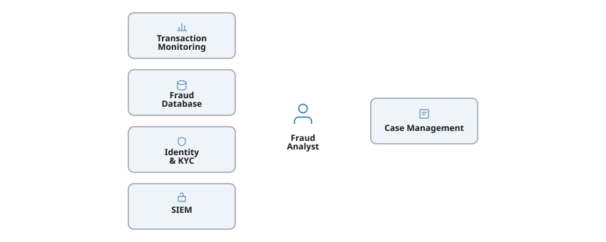
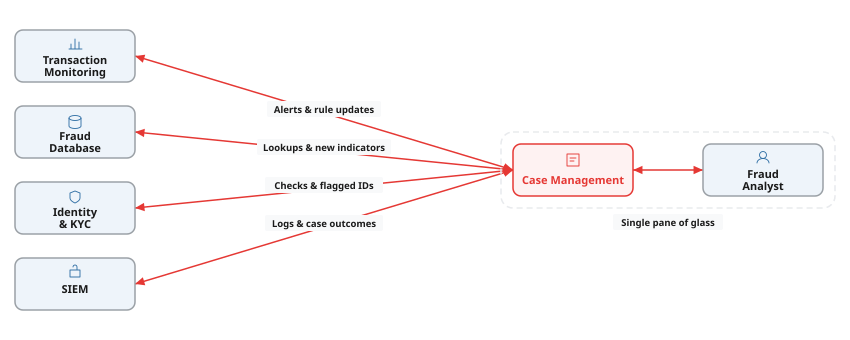
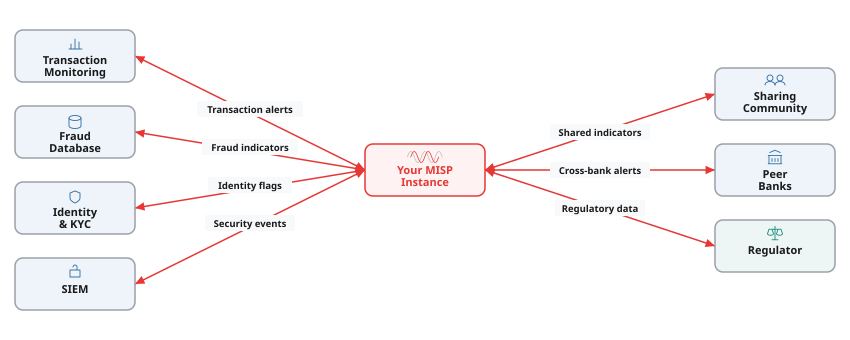

Fraud teams in banks and central banks operate under constraints that most software vendors don’t understand. We build tools that meet those requirements from the start — audit trails, data residency, access controls — so your compliance team is not an afterthought. From custom integrations to full platforms, everything is built to production standards.
Tell us what you need builtWhen no existing tool fits, we build the whole thing. We built an international fraud data sharing platform for Atraxium that is used across the APAC region — from architecture through to production deployment.
We learn your platform, understand its extension model, and build plugins that work within its ecosystem. We built EclecticIQ’s official MISP integration plugin this way.
Integrating data feeds with the platforms that need them — fraud indicators into your SIEM, threat data into your case management, regulatory reports into your compliance tools.
Building automated workflows that replace manual processes. If your team is copying data between systems or running the same steps repeatedly, we can automate it.
If it has an API, we can connect to it. We have been building integrations across fraud, banking, and compliance environments for 8 years.
Disconnected tools create manual work, data silos, and gaps in detection. Integration is how you get the full value from your technology and your people.
We work with what you have — your transaction monitoring, case management, SIEM, and other platforms — and integrate them so fraud data flows automatically between systems.
Your analyst is the glue — copying data between systems and cross-referencing logs by hand.

The same tools, now integrated. Data flows automatically in both directions — alerts feed in, outcomes flow back.

We integrate what you already have so data flows automatically between systems — your analysts spend their time on decisions, not copying and pasting between tabs.
Talk to us about integrationMost fraud data sharing communities use MISP as their core platform. We’re MISP experts — we help you create new integrations between your fraud management platforms and MISP so fraud indicators flow automatically into your detection and response workflows.
We work with what you have. Whether it’s your transaction monitoring system, fraud case management tool, or SIEM — if it has an API, we can integrate it with your MISP instance and the communities you belong to.

Already using MISP, or planning to? We can help you get your platforms connected and your fraud data flowing to the communities that need it.
Discuss MISP integrationWe have been building integrations for financial institutions and central banks for 8 years. Everything we deliver is tested, version-controlled, documented, and designed to meet the standards your organisation requires.
Discuss your fraud integration project
Python and C# are the most common in the fraud and banking environments we work in — Python for MISP integrations and data pipelines, C# for .NET platforms common in financial institutions. We also use TypeScript for web-based dashboards and Rust where transaction throughput or indicator matching demands high performance. We match the language to your existing technology stack so the code fits into your environment and your team can maintain it.
Azure DevOps is the most common in the financial institutions we work with, but we also build on GitHub Actions, GitLab CI/CD, Bitbucket Pipelines, and Jenkins. For regulated environments, we configure pipelines with approval gates, audit logging, and deployment controls that satisfy compliance requirements — not just automated builds, but a deployment process your auditors can review.
We deploy to Azure, AWS, Google Cloud, Hetzner, and on-premises infrastructure. For cloud deployments, we can deploy to your preferred region on any of those providers. We work with your existing infrastructure rather than prescribing a specific platform, and we configure deployments to meet your security, compliance, and data residency requirements.
We build for environments where auditors review the code and regulators set the rules. That means secrets scanning, dependency vulnerability scanning, static analysis, automated testing, code review, and full version history on every change. For fraud data integrations specifically, we add data validation and integrity checks so that indicators flowing between your transaction monitoring system and MISP are reliable and traceable.
If it has an API, we can integrate it. We’ve integrated transaction monitoring systems, fraud case management platforms, SIEMs, threat intelligence platforms, compliance tools, and more. We work with what you have rather than asking you to replace it.
No. MISP is the platform most fraud sharing communities use, so we have deep expertise there. But we also integrate with STIX/TAXII platforms, proprietary systems, and custom APIs. If your community or regulator uses a different platform, we can integrate with it.
Connecting a single fraud platform to MISP typically takes a few weeks. Integrating multiple systems — transaction monitoring, case management, SIEM — with proper data mapping and compliance controls takes longer. In banking environments, the integration work itself is often faster than the change management and approval process. We scope each engagement individually, account for those realities, and give you a realistic timeline upfront.
We can often find other ways to integrate. Some platforms support file-based imports, database access, webhook triggers, or extension plugins. We evaluate your specific setup and recommend the most reliable approach — including building bespoke tooling if that’s what it takes.
We create new integrations with automated testing and CI/CD pipelines, so they’re designed to be maintainable from day one. We can provide ongoing support, or hand the integration over to your team with full documentation. Either way, you’re not left with a fragile script that breaks when an API changes.
Yes. We regularly work alongside in-house teams, whether that means creating new integrations collaboratively, upskilling your developers on MISP and its APIs, or handling the specialist work while your team focuses on what they know best. We adapt to your preferred ways of working.
Tell us about your fraud tool integration needs and we'll get back to you as soon as possible.